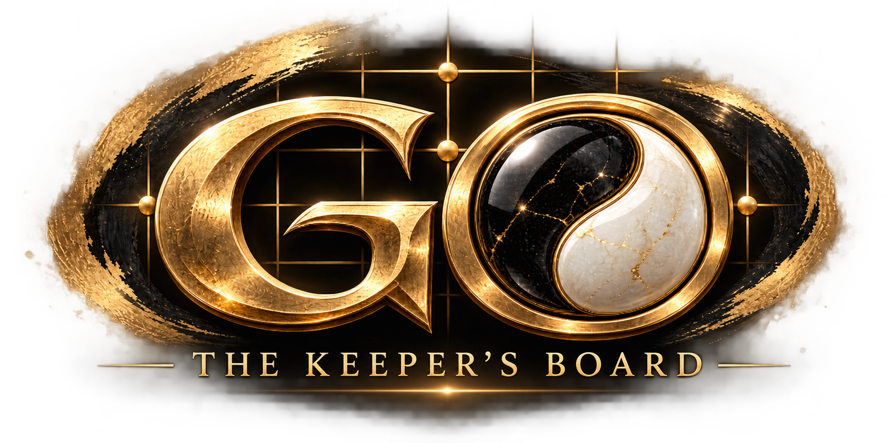

9×9 — Learn
Fast, focused games that make captures, liberties, life and death easier to see. A natural place to begin.


Discover one of the world's great strategy games through a modern experience built for iPhone. Learn on a 9×9 board, grow into 13×13 and take on the full 19×19 game. Challenge six personality-driven AI opponents, play locally with a friend or face players online, then follow a progression journey filled with puzzles, unlockable boards, backgrounds, stone sets and a few things that are better discovered for yourself.
Start small, learn the shape of the board and build toward the full game. GO supports three board sizes so a first match can feel approachable while experienced players still have the complete 19×19 battlefield waiting for them.
Fast, focused games that make captures, liberties, life and death easier to see. A natural place to begin.
More room for territory and strategy without the full scale of a 19×19 match. The bridge between learning and mastery.
The full board. Build influence, fight for territory, invade, defend and discover why no two games of Go are ever quite the same.
Sensei, Scholar, Warrior, Fox, Monk and Master each bring a distinct personality and approach to the game. Learn from them, adapt to them and eventually earn the right to challenge them.
Face six personality-driven opponents ranging from patient teaching and careful study to aggression, deception, defence and endgame precision.
Take GO online with quick, ranked and private 1 vs 1 matches, with competitive features designed around real head-to-head play.
Share one device for local two-player Go, with timed or untimed play available for the kind of match you want.
Build a collection of backgrounds, boards and custom stone sets, then mix your favourites to create your own table.
Solve board problems covering captures, liberties, ladders, life and death, connections, Ko, tesuji, territory and endgame play.
Choose a quieter experience with restrained presentation and audio options when you simply want the board and the game.
Challenge Mode is more than a puzzle list. Work through sets of board problems to unlock new backgrounds, boards and stone designs. Progress far enough and a new opponent waits at the end of the path. Beat them on the board and they become yours to challenge whenever you want.
Classic wood, marble, gardens, neon cities, temples, celestial worlds and more. GO's visual collection lets the same timeless game take on an entirely different atmosphere.


A traveller. An observer. A guide. The Keeper has seen more games than he cares to count, and he may have something to say about yours. Listen carefully. Keep learning. And perhaps, one day, you'll discover why he has been watching.
GO: The Keeper's Board is preparing for launch. App Store information will be added here when it becomes available.